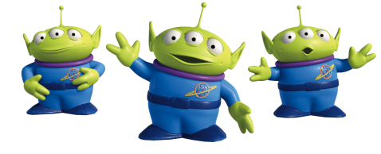

Villalobos Sánchez
Ezequiel
Buenas buenas, soy una persona curiosa pero floja,
sin embargo aquí andamos a la orden
pal desorden,
esta es mi version de hacer una pagina web con lo basico.


Buenas buenas, soy una persona curiosa pero floja,
sin embargo aquí andamos a la orden
pal desorden,
esta es mi version de hacer una pagina web con lo basico.
Estudie en el CET1 Walter Cross Buchanan la
carrera técnica redes de computo,
además de
pertenecer a la asociación de mecatronica dentro
de la escuela que
se llama ATIM.
Actualmente sigo estudiando en la ESCOM
la escuela superior de computo la carrera de
ingenieria en sistemas computacionales donde
seguimos aprendiendo de todo un poco
como
en este caso criptografía.
- Investigar sobre Astronomía
- Aprender o escuchar teorías conspirativas
- Dibujar
- Aprender sobre comedia y verla
- Escuchar batallas de frestyle
- Ver, jugar, convivir y más con mi novia :3
Recuerda que si quieres conbatir a tus rivales con un programador que le echa ganas, revisa mi CV y haz que tu empresa crezca hasta el infinito y mas alla

El algoritmo SHA-256 (Secure Hash Algorithm 256-bit) es parte de la familia de funciones hash criptográficas SHA-2 desarrollada por el Instituto Nacional de Estándares y Tecnología (NIST) de los Estados Unidos. SHA-2 es una serie de algoritmos de hash que se utilizan para generar valores hash criptográficamente seguros.
Dada la vulnerabilidad de SHA-1 a los ataques de colisión, se reconoció la necesidad de desarrollar una función hash criptográfica más segura. En 2001, el NIST emitió un llamado a la comunidad criptográfica para el desarrollo de un nuevo estándar de funciones hash. Esto dio inicio al proceso de selección y desarrollo de lo que se convertiría en la familia SHA-2.
En 2002, el NIST publicó oficialmente el estándar FIPS PUB 180-2, que incluía la especificación de la familia de algoritmos SHA-2, incluyendo SHA-256. SHA-256 genera un valor hash de 256 bits y se convirtió en uno de los algoritmos de hash más utilizados en todo el mundo para una amplia gama de aplicaciones de seguridad, incluyendo la verificación de integridad de datos y la creación de firmas digitales.